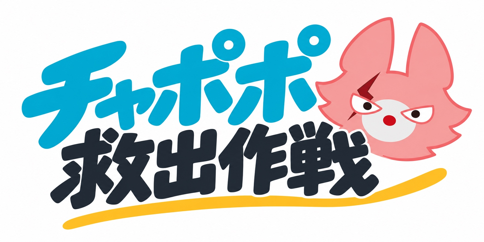
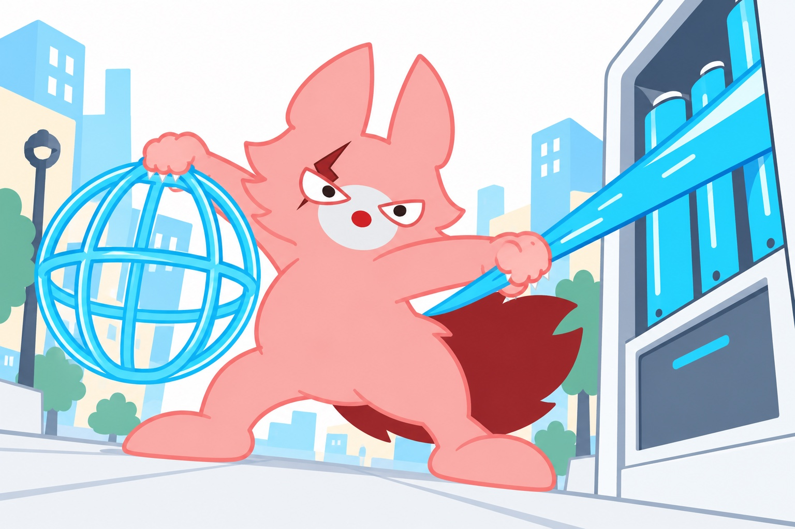

本文のフォントを選ぶ
同じ文章・17px・同じ行間で比較。見出しと台詞は現行のままです。
1 Zen Kaku Gothic New
少し柔らかい角ゴシック。本文をすっきり読ませる案。

スマホが震えた。画面に、チャポポからの通信が届く。
チャポポ
「ガルルが……！」
チャポポの声は、言い終わる前に途切れた。

ステーションから青い光が引き抜かれる。その先で、ピンクのしっぽが揺れていた。
ガルルの腕の中には、小さな光の檻。呼びかけても、返事はない。
2 M PLUS Rounded 1c
丸ゴシック。ガルルの絵と親しみやすさを揃える案。
スマホが震えた。画面に、チャポポからの通信が届く。
チャポポ
「ガルルが……！」
チャポポの声は、言い終わる前に途切れた。
ステーションから青い光が引き抜かれる。その先で、ピンクのしっぽが揺れていた。
ガルルの腕の中には、小さな光の檻。呼びかけても、返事はない。
3 BIZ UDPGothic
読みやすさ重視。文字をはっきり見せる案。
スマホが震えた。画面に、チャポポからの通信が届く。
チャポポ
「ガルルが……！」
チャポポの声は、言い終わる前に途切れた。
ステーションから青い光が引き抜かれる。その先で、ピンクのしっぽが揺れていた。
ガルルの腕の中には、小さな光の檻。呼びかけても、返事はない。
選ぶ番号をチャットでお知らせください。このページの切り替えは公開サイトやゲームの進捗を変更しません。
イベントサイトへ戻る